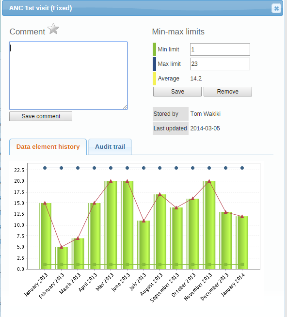

|  |
If you for example have a suspicious value that you need to investigate further, you can keep it the system, but mark it for follow-up. In the Data Quality app you can then run a follow-up analysis to view and correct all marked values.
Open the Data Entry app.
Open an existing data entry form.
Double-click the field with the value you want to mark for follow-up.
Click the star icon.